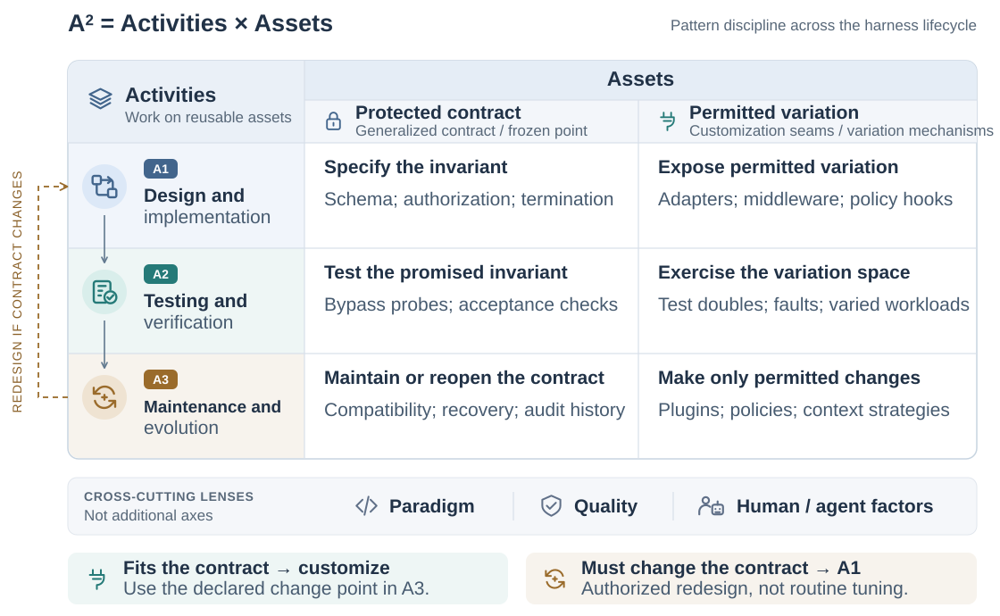

Field guide № 01Proposed pattern discipline
Pattern-Oriented
Harness Engineering:Design needs Patterns, when Agentic AI meets OOD
A field guide to the recurring decisions around AI agents: what may vary, what must hold, and what happens when it does not.

Two axes, one record.
Activities ask when an obligation is designed, verified, and revisited. Assets ask what must hold and what may change. The dashed return is re-generalization: the contract itself is reopened.

52candidate records
05source families
03activity coordinates
Inventory size, not a prevalence claim.A² / THE LENS
Activities × Assets
An engineering record gives a design pattern its operational shape. The A² lens asks when an obligation is designed, verified, and revisited—and what must remain stable while implementations change.
A²record lens
A1Design
A2Verify
A3Evolve
Protected contractWhat must hold
Declare authority, state, and acceptance
Exercise the violation path
Re-generalize when the seam fails
Permitted variationWhat may change
Admit adapters, policies, providers
Vary tests and diagnostics
Move the mechanism without losing the contract
05 / SOURCE FAMILIES
Five source families
PCoding-agent mechanismsExecution loops, tools, authority, durable state, and stop-time checks.29 recordsWWorkflows & coordinationNamed workflows and coordination forms from official agent guides.7 recordsCCommunicationClassical communication structures applied to agent systems.4 recordsRReasoning & feedbackReason–act and verbal-feedback mechanisms.2 recordsEHarness evolutionResearch mechanisms that adapt or search over harnesses.10 records
Families record provenance, not another taxonomy axis. E records are research mechanisms, not claims of independently established recurring patterns.
INDEX / 001—052
Pattern catalog
Search by responsibility, mechanism, or join point. Filter without losing the underlying record.
∅
No records at this intersection.
Try a broader term or clear one of the filters. An empty filtered view says nothing about implementations in repositories.